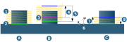

Contours
Contour selection
Contours must exist as Polylines (2D), Circles, Ellipses or Splines.
Contour attributes
To define contour attributes (top, bottom), select the machining contour in the contour list. By making multiple selections in this contour list, you can quickly define the same top and bottom values for several contours.
Use the following buttons to change the order of selected contours or delete a contour. (1) To the top, (2) Up, (3) Delete, (4) Down, (5) To the bottom.
 |
Top: Start of machining in Z direction (1).
Bottom: End depth of machining in Z direction (2).
Both parameters are relative to the current frame.
It is possible to have various vertical machining areas for the different machining contours in a job. By making multiple selections, the same top and bottom definitions can be applied simultaneously to different contours.
 |
Both parameters can be defined as absolute and relative values, and as Thickness. Thus top and bottom definitions can be made with various measurements.
Absolute (jobframe) (A): The values you set are relative to the current frame. Use the absolute dimensions when a drawing has no defined Z coordinates (2D drawing). In these cases, define the top (1) as absolute and the bottom as relative or as absolute depending on the dimensions in the drawing (3). Selected contour (2)
Specifying relative dimensions (B): Relative values are relative to the position of the CAD geometry selected in the model. This way of specifying top (1) and/or bottom (3) should be used for drawings that have Z information (for example, 3D contours, solids, defined thicknesses). Here, (2) stands for Z = 0 as the upper edge of the geometry.
Working with thickness (C): Thicknesses are relative to the position of the CAD geometry selected in the model. This way of specifying top (1) and/or bottom (2) should be used for drawings that have Z information (for example, 3D contours, solids, defined thicknesses).
 |
Freely select the start point (1) for each contour.
 |
Set an end point (2) if the contour is to be machined only partially or if there should be an overlap.
 |
Plunge point: The plunge point (1) applies for the infeed to the first workplane. The cutter moves directly from the plunge point to the starting point or to the approach macro position. The plunge point is not collision checked.
 |
Global depth
Assign a top and bottom value globally to several contours. The values can either be defined relative to a contour (Contour based option) or refer to the frame selected in the job (Frame based option).
Global depth off: (A) Machining is carried out according to the definition in the area → (1) or → (2).
Contour based: (B) Starting from the height of the defined contour (3), Offset (4) calculates the top andBottom (5) calculates the bottom of the machining. Enter the value for offset and bottom directly.
Frame based: (C) Top (7) and Bottom (8) are calculated starting from the height of the defined frame (6).
|
Define the value for top and bottom either from the CAD model using point selection or enter directly. |

|  |
Use user variables
The values for Top / Bottom or Offset / Bottom can also be defined using user variables. To do this, proceed as follows:
-
Click the icon (to the right of the input fields)
 and then the entry Create user variables to open the User Variable dialog.
and then the entry Create user variables to open the User Variable dialog. -
Select New and enter the name required for the user variable in Key. For example
TOPorOffset. Under Value, enter the height of the top or the required offset value. Proceed in the same way for the user variable for the bottom (for example:CONTOUR DEPTH).
Both values are now be displayed by clicking the icon and can be transferred directly for calculation.
Options
Overlap off: Select this option when the tool should not perform an overlap on the closed contours.
Smooth overlap: Select if the tool is to perform a smooth overlap on the closed contour. Define the Length (2) of the overlap. Use Distance (3) to define the maximum lateral distance of the tool from the model during the overlap.
(1) Start point
(4) = Toolpath points: are shown when this is activated on the General dialog page (in the Toolpath visualization area).
 |
Standard: Select this option when the tool should perform an overlap on the closed contours. Define the Length of the overlap (2).
Feedrate options
Adapt the feedrate for individual contour elements.
Center (standard): The contour is machined with the standard feedrate.
Edge control: Optimize the feedrate automatically at the edges.
Segments: Feedrate adjustment for individual contour areas (segments).
Segments
Assign a Feedrate to segments of a contour.
Click the Edit segments button to open the Segments dialog.
Add through three points: Select start point, end point and a further point on the contour.
Add through curves: Select a curve. The starting point and end point are calculated automatically.
The feedrate depends on the usage and can be modified either manually or on the basis of factors.
Change manually
-
Select segment.
-

Click the icon for cutting speed or feedrate.

The icon changed.
-
Enter the required value.
Change on the basis of factors
-
Select the segment, click the link icon and enter the required factor directly.
-
Click the link icon.
-
Enter the required factor directly.

The feedrate applies to the usage that is set on the Tool dialog page under Cutting profile.